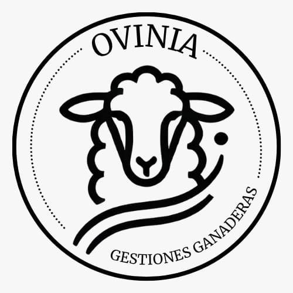
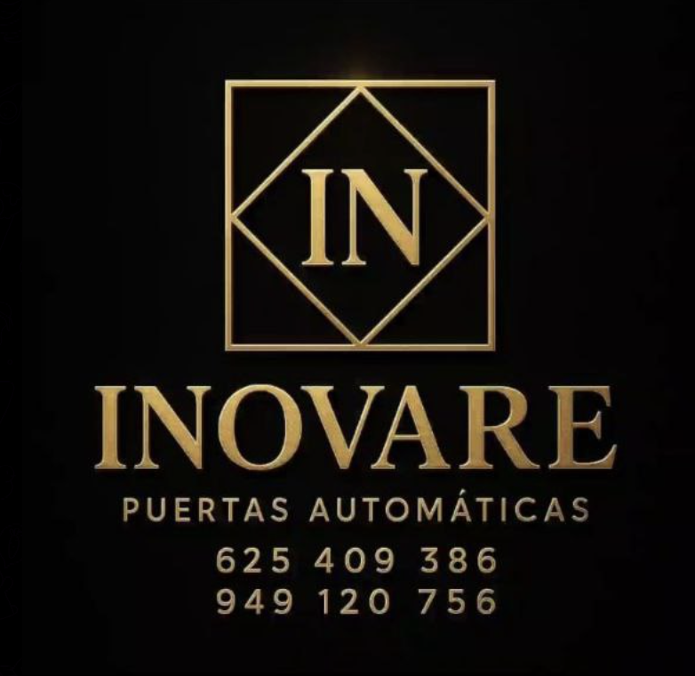
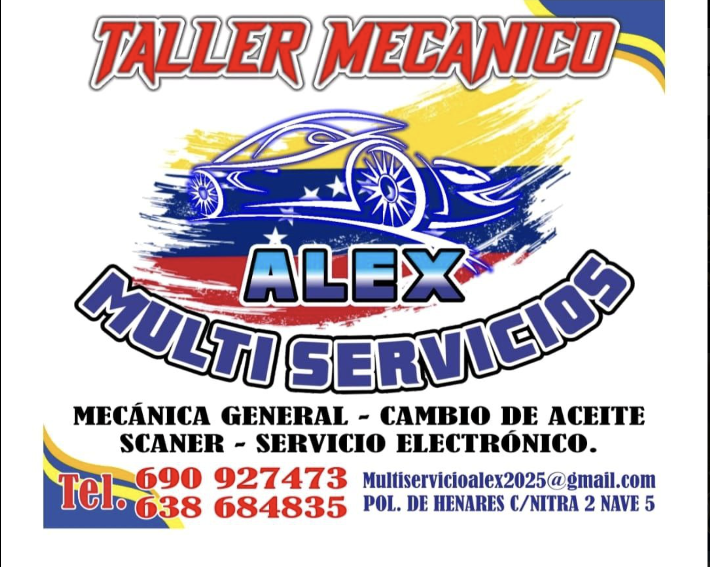
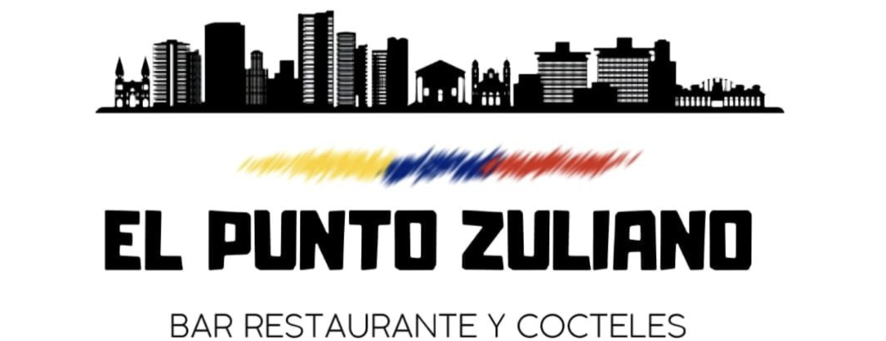
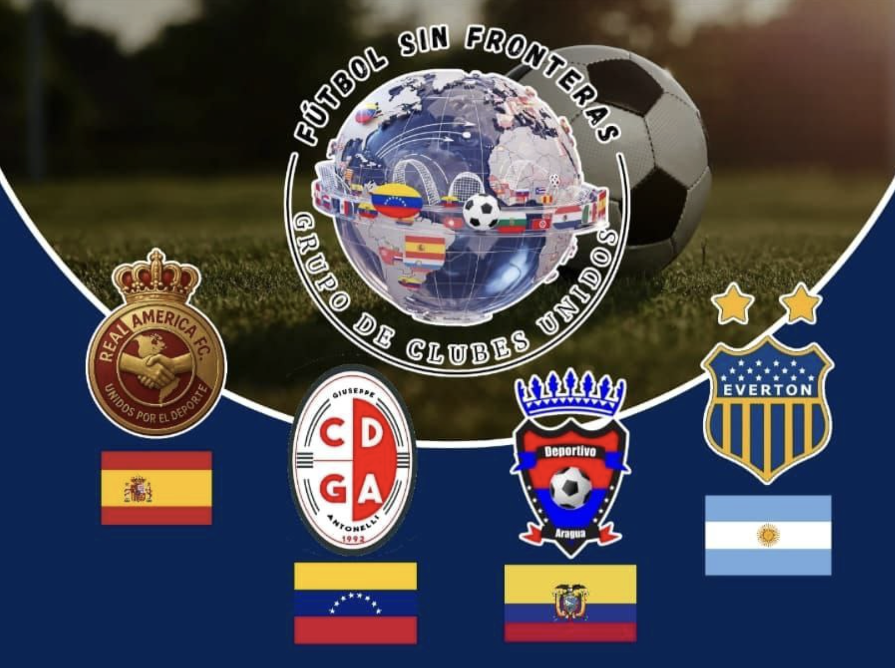

Transformando vidas a través del deporte y la agricultura sustentable
Para más información sobre oportunidades de patrocinio:
Comprometidos con la excelencia, inspirados por la pasión
Asociación Real America es una organización sin ánimo de lucro dedicada a promover la migración deportiva como herramienta de integración y desarrollo comunitario, especialmente en pueblos despoblados de España.
Combinamos la práctica del fútbol con técnicas de agricultura sustentable, creando oportunidades integrales para jóvenes, familias e inmigrantes que buscan desarrollo personal, económico y ambiental.
Presidente de Real América FC
Empresario agropecuario y promotor deportivo
Osmar Rafael Paredes Rodríguez nació el 28 de febrero de 1979 en Maracaibo, estado Zulia, Venezuela. Desde joven mostró una fuerte vocación por el trabajo productivo, iniciando su trayectoria en el sector forestal y agropecuario, donde logró consolidarse como empresario maderero y productor rural durante más de 25 años.
Durante su carrera en el estado Barinas participó activamente en el desarrollo del sector maderero regional, trabajando en la producción, comercialización y transporte de madera, además de formar parte de iniciativas orientadas a la organización del gremio forestal y la defensa de los intereses de los trabajadores del sector.
Su participación en el ámbito maderero fue reseñada en medios regionales, donde fue mencionado como representante del sector en reuniones relacionadas con la problemática del abastecimiento de materia prima, permisos de transporte y sostenibilidad del trabajo artesanal vinculado a la madera.
También participó en iniciativas de reforestación y desarrollo productivo orientadas a fortalecer la economía local y generar empleo en el estado Barinas, promoviendo la importancia del aprovechamiento responsable de los recursos forestales.
Paralelamente a su actividad empresarial, Osmar Paredes desarrolló proyectos agropecuarios propios, incluyendo ganadería, agricultura y emprendimientos vinculados a la economía rural, caracterizándose por su capacidad de trabajo y diversificación productiva.
Su filosofía siempre ha estado basada en el esfuerzo propio, la generación de empleo y el desarrollo de oportunidades en comunidades rurales.
En 2022 fundó el FC La Chinita en Barinas, Venezuela, con el objetivo de ofrecer oportunidades deportivas a jóvenes talentos. Este proyecto incluyó categorías menores sub-10, sub-15, sub-17, sub-19 y sub-20, además de un equipo competitivo en categorías federadas.
El club no solo funcionaba como institución deportiva, sino también como proyecto social, donde muchos jugadores recibían apoyo logístico, alimentación y acompañamiento, demostrando su compromiso personal con el desarrollo humano a través del deporte.
Su visión siempre fue clara:
El 13 de febrero de 2024 decidió emigrar a España, comenzando una nueva etapa personal y profesional, donde nuevamente apostó por el deporte como motor de integración social.
Como resultado de esa visión fundó el Real América FC, un proyecto deportivo orientado a la participación competitiva y al desarrollo de jugadores dentro del fútbol amateur español. Actualmente el club participa en competiciones de fútbol 7 y categorías autonómicas, consolidándose como un proyecto emergente con visión de crecimiento estructural y autosuficiencia deportiva.
La trayectoria de Osmar Paredes refleja la historia de un emprendedor forjado en el trabajo duro, que ha sabido reinventarse en diferentes sectores y países, manteniendo siempre tres principios fundamentales:
Hoy continúa desarrollando el Real América FC como parte de un modelo que combina deporte, integración social y proyectos productivos, incluyendo iniciativas vinculadas al mantenimiento rural, sostenibilidad y aprovechamiento agropecuario.
Su historia sigue en construcción, con la misma visión que ha marcado su vida: Convertir el trabajo y el deporte en herramientas para crear oportunidades.
Fomentar la migración deportiva y el desarrollo agropecuario sustentable en la comunidad.
La comunidad necesita programas que integren deporte, educación y sostenibilidad, promoviendo estilos de vida saludables y responsables con el medio ambiente.
El proyecto responde a la necesidad de:
Tu ayuda impulsa nuestro proyecto de integración a través del deporte y el desarrollo agropecuario sostenible.
Realiza una transferencia al IBAN indicado para apoyar directamente nuestras actividades.
Equipamiento deportivo, herramientas agrícolas o materiales. Consulta por correo para coordinar la entrega.
Entrenadores, mentores o especialistas en agricultura: tu experiencia suma al proyecto.
Ayúdanos compartiendo el proyecto en tus redes para llegar a más personas.
Escríbenos directamente:
realamericafutbol@gmail.com




Las empresas aquí mencionadas manifiestan total disposición y respaldo al Proyecto Deportivo Real América, orientado al desarrollo agropecuario y sostenible en los pueblos despoblados de España.
El dinero recibido será destinado a becas para deportistas de otros países, apoyando su integración y regularización en España.
Gracias a tu apoyo, los deportistas podrán acceder a una experiencia integral, facilitando su adaptación y crecimiento personal en España.
Juntos podemos crecer, jugar y producir de manera responsable ⚽🌱
Este proyecto representa la esperanza de una comunidad que cree en el deporte como herramienta de transformación y en la agricultura sostenible como camino hacia la autonomía y la responsabilidad con nuestro planeta.